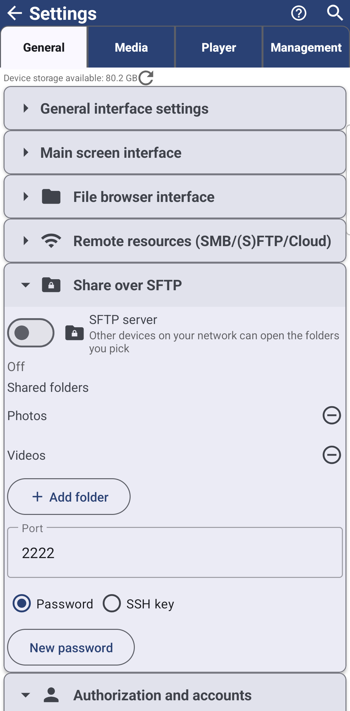

Перетворення телефону на SFTP-сервер
Діліться папками прямо з цього телефону через SFTP - обирайте їх засобом вибору папок, входьте за паролем або SSH-ключем і спарюйте інший FastMediaSorter одним скануванням замість введення адреси вручну.
Чому вам це сподобається
FastMediaSorter зазвичай сам тягнеться до папки десь-інде - на ПК, NAS чи в хмарному акаунті. Іноді буває навпаки: варті уваги фото лежать на телефоні, і саме інший пристрій має дотягнутися й забрати їх. Увімкніть власний SFTP сервер телефону, виберіть папки для спільного доступу, і будь-який пристрій, що розуміє SFTP - включно з іншим телефоном із цим застосунком - зможе їх відкрити.
- ✓ Цей застосунок у будь-якій редакції, крім Lite, на Android 8.0 (Oreo) або новішому.
- ✓ Папки, які хочете відкрити, вибрані через системний засіб вибору папок.
- ✓ Або пароль (застосунок може згенерувати його сам), або відкрита частина SSH-ключа того, хто підключатиметься.
- ✓ Для спарювання з іншим FastMediaSorter скануванням: камера на пристрої, що підключається.
Увімкніть сервер
Відкрийте Налаштування, вкладку Загальні, і знайдіть картку Доступ через SFTP. Увімкніть SFTP-сервер - «Інші пристрої у вашій мережі зможуть відкрити вибрані папки» - і рядок стану нижче переходить із Вимкнено на Запуск.., а тоді на Працює: 192.168.1.42:2222 - його адресу й порт. Увімкнення без жодної відкритої папки або без налаштованого способу входу перехоплюється ще до старту: «Додайте хоча б одну папку і знову увімкніть сервер» або «Додайте відкритий ключ або увімкніть вхід за паролем, потім знову увімкніть сервер».
Телефон без Wi-Fi усе одно може увімкнути сервер, але прямо про це попереджає: «Працює, але телефон не підключено до Wi-Fi - інші пристрої поки його не бачать». Постійне сповіщення «SFTP-сервер увімкнено» лишається весь час з адресою для підключення і кнопкою Зупинити в один дотик.
Виберіть папки для спільного доступу
У блоці Спільні папки торкніться Додати папку, щоб відкрити системний засіб вибору папок і вказати папку на телефоні чи його карті пам'яті. Доки ви не додали жодної, розділ просто показує «Папок поки немає - додайте папку, щоб відкрити до неї доступ». Кожна додана папка отримує власний рядок із кнопкою видалення поруч, а дозвіл переживає перезавантаження, тож ті самі папки лишаються відкритими й після перезапуску телефону.
Папка, додана, поки сервер уже працює, приєднується миттєво - не потрібно вимикати й знову вмикати сервер заради нової папки.

Вирішіть, як люди входитимуть
Одразу під списком папок виберіть Пароль або SSH-ключ. З Пароль застосунок уже згенерував один; торкніться Новий пароль будь-коли, щоб замінити його. З SSH-ключ вставте відкриті ключі тих, хто має підключатися, у поле Відкриті ключі, по одному в рядку - телефону ніколи не потрібен їхній приватний ключ, лише те, що його підтверджує.
Поки сервер працює, поточні дані для входу показані прямо тут: «Логін: fms, пароль: 7f3kQ2mN» або «Логін: fms, вхід за SSH-ключем» - тож ви можете просто зачитати їх тому, хто підключається, не шукаючи деінде. Саме ім'я входу незмінне; змінюються лише пароль або прийняті ключі.
Налаштування, вкладка Загальні, картка Доступ через SFTP, вибрано режим пароля, сервер працює, видно рядок облікових даних.
Змініть налаштування, не втрачаючи з'єднання
Поле Порт за замовчуванням заповнене вільним портом і його можна змінити - порт, уже зайнятий іншою програмою, відхиляється, наприклад «Порт 2222 зайнятий іншою програмою - виберіть інший», а значення поза дозволеним діапазоном - «Вкажіть порт від 1024 до 65535». Зміна порту, способу входу чи ключів, поки сервер уже працює, не перезапускає його сама собою: «Вимкніть і знову увімкніть сервер, щоб застосувати зміну» - тож клієнт, який уже підключений, не відвалюється через налаштування, яке ви ще редагуєте.
Спарюйте інший FastMediaSorter скануванням
Поки сервер працює, торкніться Показати код для підключення, щоб показати QR-код - «Код для підключення: відскануйте його у FastMediaSorter на іншому пристрої» - і Сховати код для підключення, щоб прибрати його знову. Код перебудовується заново щоразу, як ви його показуєте, тож завжди містить поточну адресу й пароль сервера.
На іншому пристрої відкрийте Додати ресурс, картку SFTP / FTP і торкніться Імпорт за штрих-кодом - той самий сканер, що читає код Windows-компаньйона, розпізнає і цей. Повідомлення підтверджує, що форму заповнено: «Дані підключення заповнено з коду - перевірте їх і збережіть», із хостом, портом, іменем користувача, паролем чи ключем і відбитком ключа сервера, уже на місці, із запропонованою назвою «Сервер пристрою 192.168.1.42». Перевірте і збережіть - відбиток ключа закріплюється з першого сканування, тож пізніша спроба з іншого пристрою за тією самою адресою буде відхилена, а не прийнята мовчки. Про пошкоджений чи неповний код теж повідомляється: «Це не повний код підключення FastMediaSorter - покажіть його на телефоні-сервері ще раз і відскануйте».
Налаштування, вкладка Загальні, картка Доступ через SFTP, сервер працює, QR-код для підключення показано під кнопкою сховати.
Що ви отримаєте
Телефон відкриває доступ рівно до тих папок, які ви вибрали, і кожному іншому потрібен або пароль, або прийнятий SSH-ключ, щоб увійти, а сполучення з іншим FastMediaSorter займає одне сканування замість введення адреси вручну. Дотик на Зупинити - у застосунку чи в сповіщенні - одразу все завершує.
Поради та усунення несправностей
- Хочете натомість підключити папки з ПК? Поширення папок ПК через Fast Media Sorter для Windows описує ту саму ідею сполучення з іншого боку.
- Налаштовуєте сервер, вводячи адресу вручну? Підключення серверів SFTP та FTP охоплює цей ручний шлях з будь-якого кінця з'єднання.
- Вперше працюєте з SSH-ключами? Власна документація проєкту OpenSSH пояснює, як працює пара ключів, якщо тутешні терміни незнайомі.